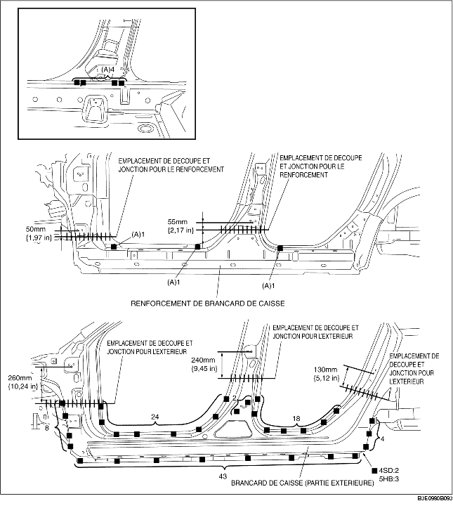

1. Au moment de joindre et de découper les parties nouvelle et existante, essayer de mettre la nouvelle partie en place, puis mesurer et ajuster la carrosserie pour qu'elle soit conforme aux dimensions standard.
2. Percer des trous pour les soudures en bouchon avant de reposer de nouvelles pièces.
3. Souder aux 7 emplacements indiqués par (A) et installer temporairement le renforcement de longeron.
4. Après avoir installé temporairement les nouvelles pièces, s'assurer que les pièces associées se mettent en place de manière appropriée.
